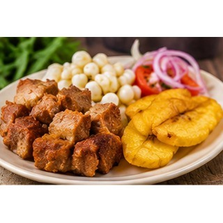

Reseña del cantón
Babahoyo es la capital de la provincia de Los Ríos y un importante punto de encuentro comercial. Su desarrollo histórico ha estado relacionado con los ríos y las rutas de transporte fluvial de la Costa ecuatoriana. En la ciudad conviven actividades administrativas, comerciales y agrícolas, mientras sus espacios públicos y tradiciones reflejan la cultura de la provincia.
Población
178.505 habitantes (Censo de Población y Vivienda 2022).
Parroquias
Babahoyo, Barreiro y El Salto (urbanas); Caracol, Febres Cordero, La Unión y Pimocha (rurales).
Economía y cultura
Su ubicación a orillas del río Babahoyo ha favorecido históricamente el transporte y el intercambio comercial. Hoy reúne servicios administrativos, mercados y espacios públicos que conectan a habitantes de distintos cantones.
Alcalde
Gustavo Barquet — período 2023–2027.

Fuente: Directorio oficial de alcaldes y alcaldesas de AME.
Platos típicos
Fritada, sopa de camarón y cazuela de pescado.

Estas preparaciones se documentan como parte de la gastronomía local. Su disponibilidad y preparación pueden variar entre comunidades.
Lugares turísticos
Casa de Olmedo, malecón de Babahoyo y sector de Barreiro. Son espacios vinculados a la historia, el paisaje fluvial y la identidad local.
Hoteles y hospedaje: ubicación y direcciones
Estos establecimientos aparecen en directorios públicos y resultados de mapas consultados. Confirma por teléfono que sigan operando, sus tarifas y disponibilidad antes de viajar.
- Hotel del Río Dulce
Dirección o referencia: General Barona y Juan Montalvo, Babahoyo.
Ver ubicación y cómo llegar en Google Maps - Hotel Ciudad del Río
Dirección o referencia: Sector Pedro Carbo y 10 de Agosto, Babahoyo (referencia plus code 6F2C+R42).
Ver ubicación y cómo llegar en Google Maps
Mapa del cantón
Mapa de Google Maps centrado en el cantón: